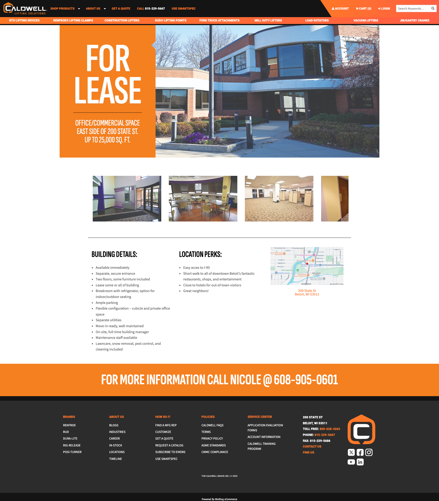

Designed a clean, focused commercial property listing page with an emphasis on visuals, key details, and a single clear call to action — built within Caldwell's design system.

The Context
Goals
Key Design Decisions
A prospective tenant doesn't want to read their way to understanding the space. Hero photography of the building and space leads the page — making an immediate impression before any text is read.
This mirrors how people evaluate real estate — visually first, details second.
Building Details and Location Perks are presented side by side — allowing prospects to quickly scan what matters to them without hunting through paragraph text.
A location map is embedded alongside the perks column — reinforcing the "where" without requiring a separate interaction.
Rather than a buried contact form or a link in small text, the CTA is a large, prominent phone number displayed with clear context — "For more information, call."
One action. No form. No decision fatigue. Just a phone number that makes it easy to take the next step.
Results
Designed and launched quickly within Caldwell's existing infrastructure — no new systems, no separate microsite, no delay.
The page matched Caldwell's design system and visual standards — professional and consistent with the company's existing web presence.
Eliminated decision fatigue with a single, prominent call to action. Prospects know exactly what to do next.